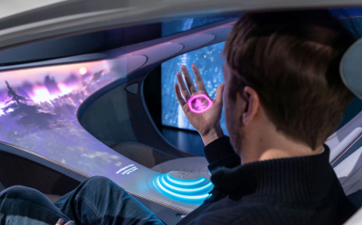
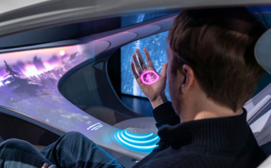

CONCEPT
Электромобильность в гармонии с человеком и природой. Экологичная технология органических аккумуляторов и продуманная операционная стратегия концепт-кара VISION AVTR.

PREMIER
На выставке CES 2020 был представлен новый концептуальный Mercedes-Benz – VISION AVTR. Футуристическая концепция представленного электромобиля объединяет человека, природу и автомобиль уникальным образом.
Ола Каллениус, председатель правления Daimler AG и Mercedes-Benz AG, в своем выступлении представил концепт-кар вместе с лауреатом премии Оскар и создателем фильма Аватар, Джеймсом Кэмероном.
Именно философия, созданная культовым режиссером в фантастическом фильме, стала основой создания VISION AVTR.


«Mercedes-Benz всегда был одним из самых технологичных премиальных брендов. Теперь пришло время объединить роскошь и экологичность. Ведь только так мы сможем соответствовать стандартам будущего».

INTERIOR & EXTERIOR
Дизайн VISION AVTR – воплощение экологичности
Новаторская концепция VISION AVTR сочетает в себе экологичное взаимодействие дизайна интерьера, экстерьера и UX. Весь процесс проектирования был ориентирован на конкретный результат – неповторимый опыт взаимодействия и восприятия концепт-кара водителем и пассажирами. Речь шла о создании уникального пространства, в котором пассажиры имеют биометрическую связь друг с другом, с транспортным средством и окружающим миром
Боковое внешнее отверстие проходит через внутреннюю часть и создаёт бесконечную петлю, прототипом которой стала священная связь между народом На'ви в фильме Аватар и их естественной средой обитания
Также, благодаря удлиненному дизайну «One Bow» и органической философии дизайна, VISION AVTR демонстрирует радикально новый этап автомобилестроения. Таким образом, пройдя путь от концепции осознанности до уникального слияния человека и автомобиля, инженерам Mercedes-Benz удалось создать концептуальный электромобиль VISION AVTR.

Лаконичным продолжением внешнего минималистичного дизайна являются передние сиденья, выполненные в очень органичной форме, которая напоминает лиственные гамаки с планеты Пандора. Центральная консоль символизирует Древо Душ, самое священное место На'ви. Блок управления – интуитивно понятным и невероятно функциональным.


 

Кроме того, центр управления располагается таким образом, что является легко доступным как для водителя, так и для пассажира, а также и для пассажиров сзади.
Таким образом, VISION AVTR устанавливает тесную биометрическую связь с водителем и помогает повысить осведомленность об окружающей ситуации.
Задняя часть сидений и внутренняя отделка крыши, выполнены из специальной ткани, которая меняет цвет. В зависимости от освещения текстиль может быть темно-синего или нежного светло-синего цвета.
Но кроме этого, экологичность салона электромобиля повышена с помощью вегетарианской кожи DINAMICA® – первой и единственной микрофиброй, которая гарантирует экологическую эффективность на протяжении всего производственного цикла.
DINAMICA® является переработанным материалом из старой одежды, тканей и пластиковых бутылок из ПЭТФ.